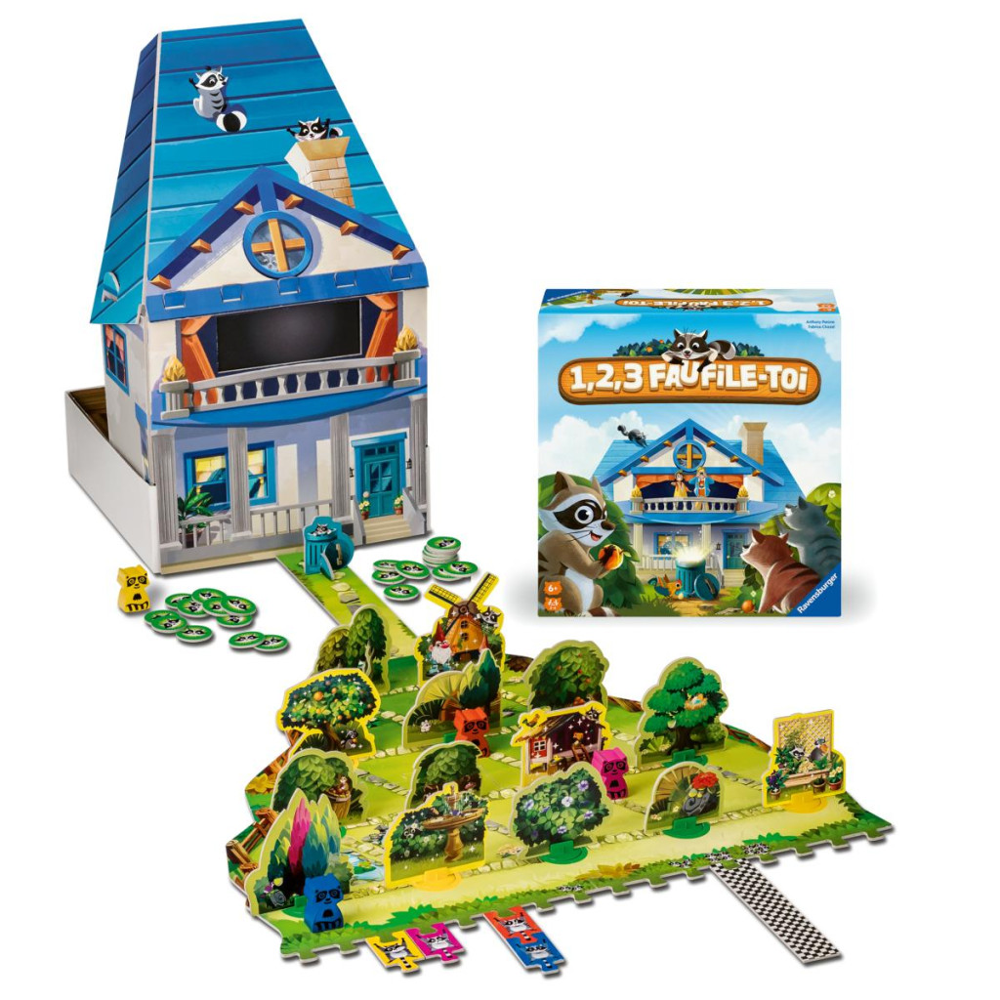

1, 2, 3 Faufile-toi est un jeu d’observation et de cache-cache inspiré du principe de « 1, 2, 3 soleil ». Les joueurs incarnent alternativement des ratons laveurs qui avancent et se cachent, et un jardinier qui tente de les repérer. Quand la fenêtre se ferme, les ratons laveurs progressent rapidement avant de se dissimuler.
Le jeu propose un univers ludique et coloré mettant en scène des animaux malicieux tentant de chaparder dans un jardin. Il comprend un plateau, une maison en volume, des obstacles à contourner et des figurines. Ce matériel immersif renforce l’aspect amusant et visuel, particulièrement adapté à un jeune public.
La partie se termine lorsque les joueurs ont accumulé un certain nombre de jetons, obtenus soit en découvrant des ratons laveurs pour le jardinier, soit en restant cachés pour les autres. Le gagnant est celui qui a obtenu le plus de jetons à la fin, récompensant observation et discrétion.
6 ans
joueurs
minutes